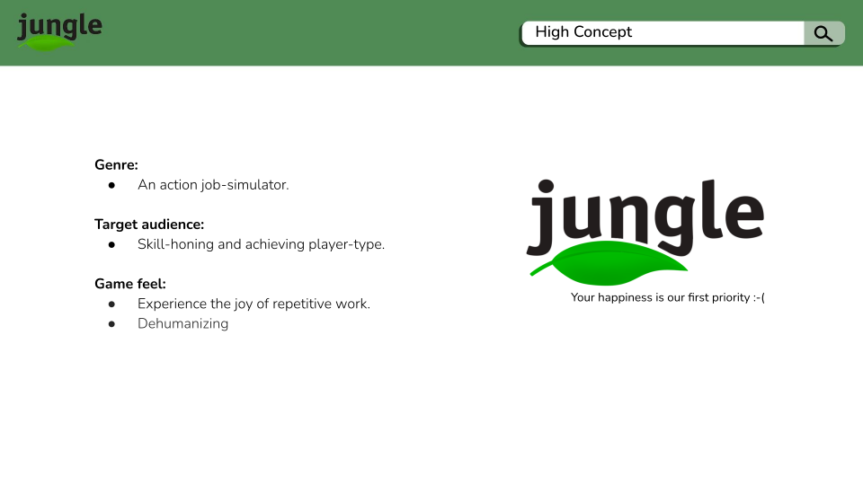
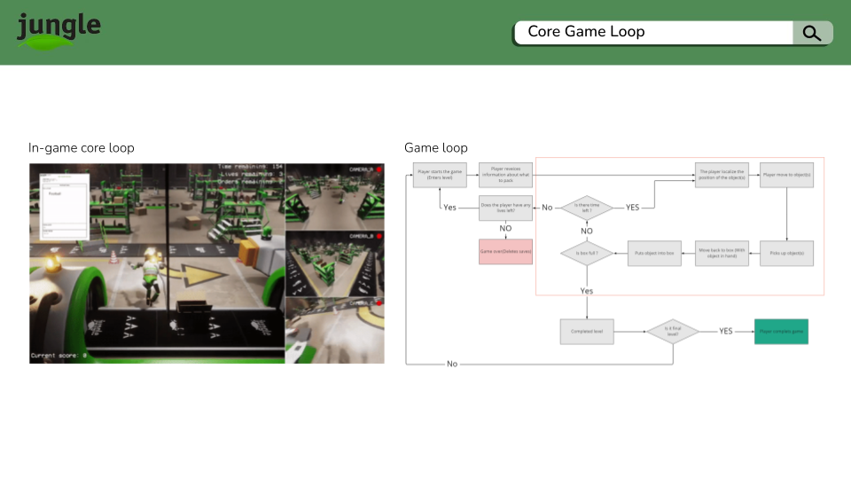
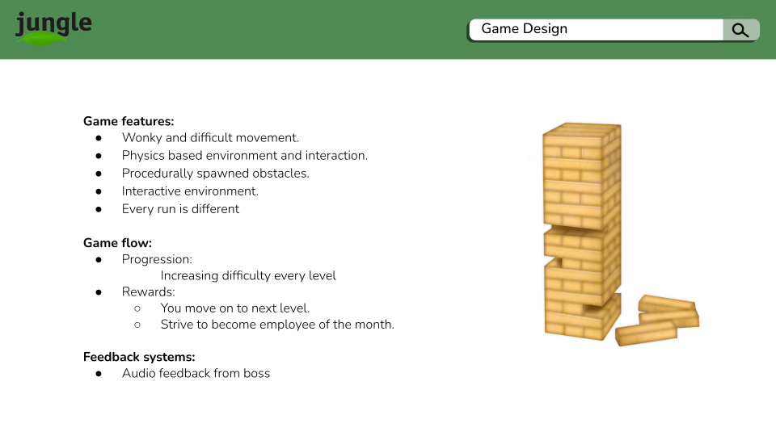
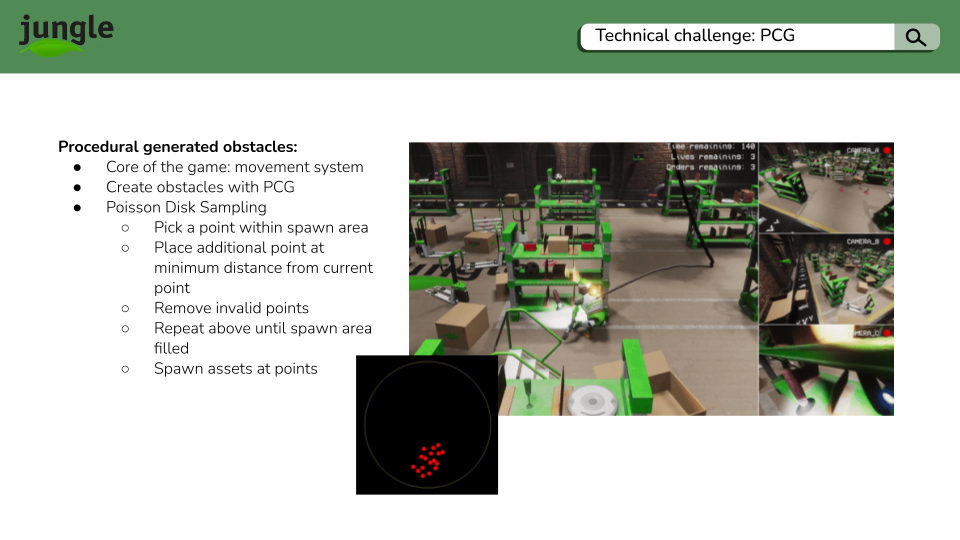

Intro
I programmed rigid body movement, procedural content, UI, and localization systems for a 3rd-person order delivery game in Unity's HDRP.
Game Summary
  
Gameplay Video
Project Contributions (Click)
Procedural Content Analysis
Poisson Disk Sampling Algorithm (CODE SNIPPET)

public static class PoissonProceduralObstacleGeneration
{
static bool is_valid(List samples, int[,] grid, Vector2 sample, Vector2 sample_zone,float radius, float cell_size)
{
// candidate sample vector must be within sample region/zone
if(sample.x < sample_zone.x && sample.x >= 0 && sample.y < sample_zone.y && sample.y >= 0)
{
// find out which cell the candidate is in, and search surround cells
int x = (int)(sample.x / cell_size);
int y = (int)(sample.y / cell_size);
//start two cells to the left and end two cells to the right
int offset_x = Mathf.Max(0, x - 2);
int out_x = Mathf.Min(x + 2, grid.GetLength(0) - 1);
int offset_y = Mathf.Max(0, y - 2);
int out_y = Mathf.Min(y + 2, grid.GetLength(1) - 1);
for (int i = offset_x; i < out_x; i++)
{
for (int j = offset_y; j < out_y; j++)
{
// get sample point's index
int s_index = grid[i, j] - 1;
// if there is no point in the cell
if(s_index != -1)
{
// get distance between point at index and candidate point (using sqrMagnitude bc its cheaper on system to get than mag)
float dist = (sample - samples[s_index]).sqrMagnitude;
// if radius is too close to the point reject point
if(dist < radius*radius)
{
return false;
}
}
}
}
// is valid
return true;
}
// not valid
return false;
}
public static List GeneratePoint(float radius, Vector2 grid_size, int numSamplesBeforeRejection = 30)
{
// find the size of a cell's square
float cell_size = radius / Mathf.Sqrt(2);
// number of times the cell size fits into sample region size, for each cell
// grid will tell us for each cell, what the index is of each point, (0 means no point, 1 has index 0)
// to get the number of columns divide the width / cell_size and rows
int[,] grid = new int[Mathf.CeilToInt(grid_size.x / cell_size), Mathf.CeilToInt(grid_size.y / cell_size)];
// create new vectors of sample candidate points
List samples = new List();
List spawn_samples = new List();
// create spawn point list
spawn_samples.Add(grid_size / 2);
// while spawn point list is not empty
while (spawn_samples.Count > 0)
{
int index = Random.Range(0, spawn_samples.Count);
Vector2 current_spawn_sample = spawn_samples[index];
bool rejected_sample = true;
for (int i = 0; i < numSamplesBeforeRejection; i++)
{
// angle of candidate point
float angle_offset = Random.value * Mathf.PI * 2;
//rotate a vector at a given angle
float x = Mathf.Sin(angle_offset);
float y = Mathf.Cos(angle_offset);
Vector2 offset_direction = new Vector2(x, y);
// new magnitude
// radius is min so that candidate is spawned outside spawn center
float new_magnitude = Random.Range(radius, 2 * radius);
offset_direction *= new_magnitude;
// assign info to sample
Vector2 sample = current_spawn_sample + offset_direction;
if (is_valid(samples, grid, sample, grid_size, radius, cell_size))
{
// add sample to point list
samples.Add(sample);
// add sample as new spawn point
spawn_samples.Add(sample);
// record which cell the sample point ends up in
grid[(int)(sample.x / cell_size), (int)(sample.y / cell_size)] = samples.Count;
rejected_sample = false;
break;
}
}
// if not accepted remove from spawn point list
if (rejected_sample)
{
spawn_samples.RemoveAt(index);
}
}
return samples;
}
}
Procedural Object Spawning Manager (CODE SNIPPET)

public class ProceduralObjectManager : MonoBehaviour
{
private List samples;
public List obstacles;
public Vector2 zone= Vector2.one;
public float sparcity = 1;
private int k = 2;
public float scale = 1;
private void Start()
{
samples = Poisson.GeneratePoint(sparcity, zone, k);
if(samples != null)
{
foreach(Vector2 sample in samples)
{
int index = Random.Range(0, obstacles.Count);
GameObject obstacle = Instantiate(obstacles[index], new Vector3(sample.x, 0, sample.y)+transform.position, Quaternion.identity)as GameObject;
obstacle.transform.Rotate(0, Random.Range(0, 360), 0);
obstacle.transform.localScale = Vector3.one * scale;
}
}
}
private void OnDrawGizmos()
{
Gizmos.color = Color.yellow;
Gizmos.DrawWireCube((new Vector3(zone.x, 0, zone.y) / 2)+transform.position, new Vector3(zone.x, 0, zone.y));
}
}
Player Movement System